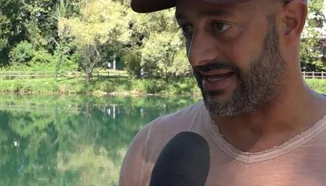

Friuli
da sab 5 set a dom 6 set · dalle 15:00
Open day al Battirame
Weekend di sport, natura, musica, food truck e attivita per tutte le eta.
 Indicazioni
Indicazioni
- Costi e prenotazioni
- Attività gratuite · Prenotazione non indicata
- Programma
- Programma confermato. Orari e attività sono pubblicati da PromoTurismoFVG e nel calendario del Comune.
- In caso di maltempo
- Nessuna indicazione specifica pubblicata.
- Note
- Consigliati abbigliamento comodo, tappetino per alcune attività e coperta da picnic.
L’EVENTO
Descrizione completa
Il nuovo polo sportivo e naturalistico del Battirame apre con prove gratuite di canoa, kayak, fitness, break dance, yoga, Pilates, respirazione e corsa. Il fine settimana comprende anche musica, concerti e food truck al Parco San Carlo.
Consigliati abbigliamento comodo, tappetino per alcune attività e coperta da picnic.
IL PROGRAMMA
Programma e orari
Appuntamenti raccolti dalle fonti elencate. Dove manca un orario, non è ancora disponibile in questa scheda.
Sabato 5 settembre
- 15:00–19:00 · Prove e attività sportive
- 19:00 · Musica, concerti e food truck
Domenica 6 settembre
- 08:00–17:00 · Attività sportive e natura
INFORMAZIONI UTILI
Prima di partire
- Consigliati abbigliamento comodo, tappetino per alcune attività e coperta da picnic.
ORGANIZZAZIONE